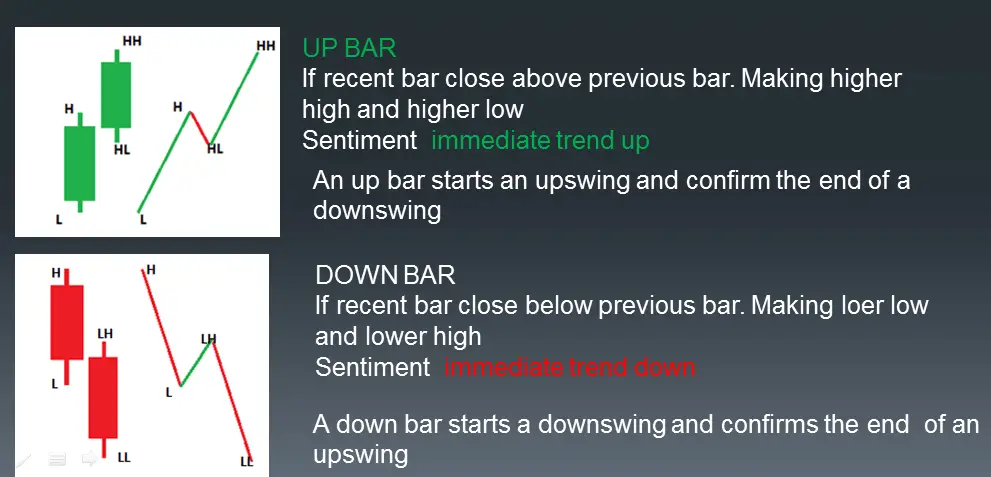
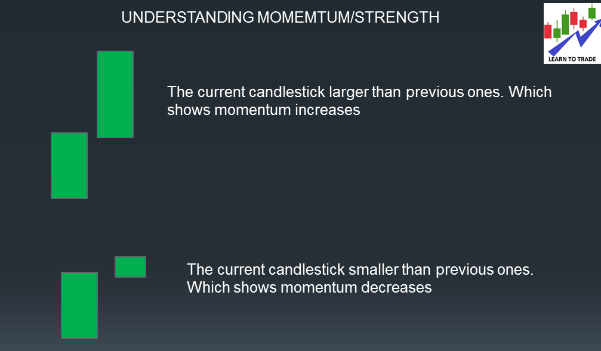
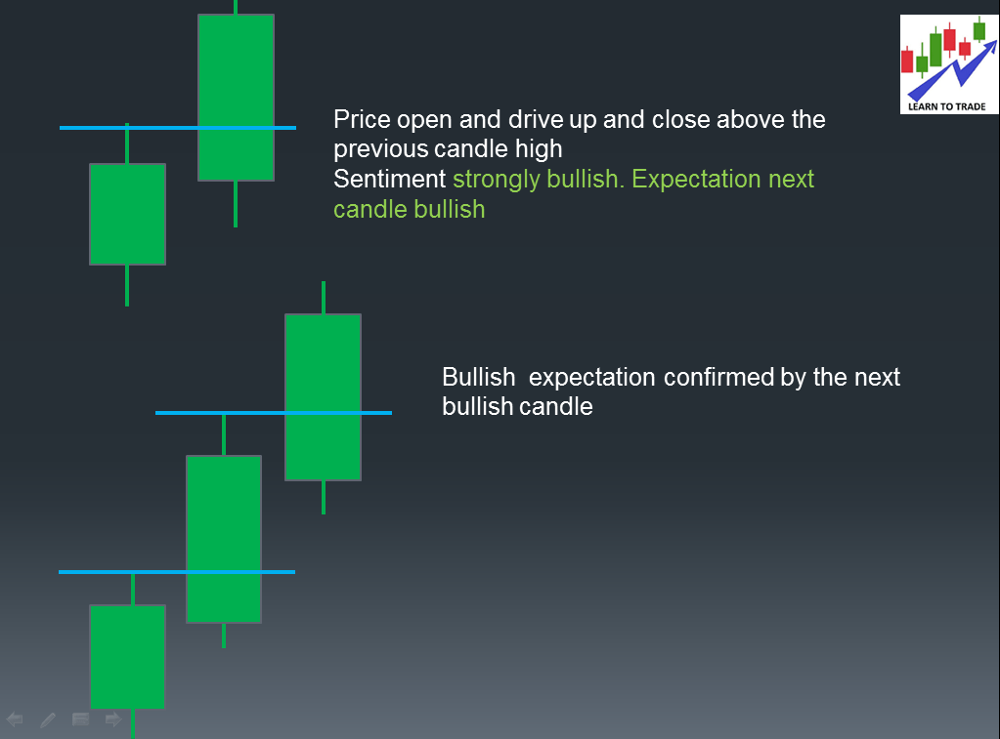

In this article, I am going to discuss Candlestick Analysis in Trading. Please read our previous article discussing How to Study Candlestick in detail. The ultimate guide you will ever need to understand CANDLESTICK and its behaviors. After the study, you will not need to recognize any CANDLESTICK patterns. As part of this article, you will understand the following four things related to Candlestick Analysis in Trading.
Remember that in every bar, the same number of contracts/shares are sold and bought at that time frame
Generally, we have to consider 3 types of body

The candle body shows lots of information, such as

Let us see some example

The length of any wick, either to the top or bottom of the candle, is ALWAYS the first point of focus because it instantly shows strength, weakness, and indecision, and most importantly, where SMART-MONEY enters.

Let’s understand the pin bar


When candles cannot break through a zone 70-80% of the time, they will go the opposite way.
That means the relationship of each bar is high/low relative to the previous bar. What is it telling us?

Candlestick should analyze the context of the move. You should never try to read the market by looking at one day’s action in isolation. A candlestick must always be analyzed in the context of what has happened in the past.
Context is what the current candlestick shows with respect to the previous candlestick.

Testing refers to the market moving towards a price level to “test” if the price level will accept or reject the market’s advances. Key levels are
The high and low of each price bar are natural support and resistance levels, and the wick generally acts as a supply and demand zone. The test of these levels or zones shows the undercurrents of the market and is critical for reading price action.

With a clear read of DIRECTION, CONTEXT, TESTING. we can form expectations of the market in the third candle. We would expect the market to move in a certain way in the third bar with our read of DIRECTION, CONTEXT, and TESTING. The confirmation or failure of our expectations of the third bar reveals more about the market and adds to our candlestick analysis.
To form expectations, we need to make a very simple assumption about how the market should behave and should not behave.
Essentially, the market has momentum and inertia. bearishness should follow bearishness, and bullishness should follow bullishness. When it does not obey this assumption, we have to be cautious, Maybe a possible change in market direction.

A candlestick pattern is useless if its location is incorrect; where it happens is the most important variable. So, we should analyze the candlestick at support and resistance for opportunity, either reversing or continuing the trend.
AT resistance, we expect the price to reverse or supply to exceed demand, confirming the supply or resistance level. Like at the support, we expect the price to reverse to confirm demand over supply.
Some key pointers should be considered when trading reversal. This means that candlestick action validates our support and resistance level. Explained below

Below is an example of a bullish reversal
In an established uptrend, any Clear Rejection from resistance in the form of the pin bar confirms the resistance level, and it indicates buyers tried but failed to close above the resistance.

MULTIPLE REJECTION SHOWS THAT BUYERS TRIED OVER AND OVER AGAIN TO PUSH THROUGH THE LEVEL BUT FAILED

When Buyers try hard each time to close above the resistance level, each time they failed shows supply coming and trying to dominate demand.

For bearish reversal. The price should break the previous candle low and close below the low at resistance. It shows bullish strength completely lost.
When a reversal momentum candle forms from the key level, it confirms the strength of the level of the opposite party. When a bullish strength candle forms from support, it confirms the support level as strong.

There is a certain point also considered when the price approaches support or resistance. That validated or invalidated our support or resistance level
With a widespread up, while the price is getting close to the resistance, we would expect to see the resistance broken due to the extra effort by buyers


Part1: Understanding candlestick
Part2: How to read candlestick
Wide range bar(show strength or momentum)
Narrow range bar(momentum or strength decreases)
A pin bar(shows rejection or either supply or demand came in)
Doji(indecision )
Part3: How to read a chart using a candlestick
First, read the current candle direction with respect to the previous candle.
Second, read the current candle sentiment with respect to the previous candle.
Third, read the testing key level
Expect what you fill
Step to find a trading opportunity for reversal
Point1 Momentum loss when approaching resistance /support
Point2 Clear Rejection from resistance in the form of the pin bar multiple rejections
Point3 Price unable to close above the resistance
Point4 CANDLE COLOR CHANGE
Point5 REVERSAL MOMENTUM CANDLE FROM KEY LEVEL
What candlestick action disconfirms the resistance?
Candle spread increases when approaching the resistance level
If the price hugs the resistance and holds, it disconfirms the demand and shows the presence of demand
Candlestick analysis is a technique derived from Japanese rice traders in the 18th century, notably by Munehisa Homma. It has since been refined and adapted to modern financial markets such as stocks, forex, and commodities. Candlestick patterns are a form of technical analysis, and charting traders use to identify potential price movements based on historical price data.
Each candlestick typically represents one day’s worth of price data about a stock (though any timeframe can be used—minutes, hours, days, weeks, or months). A candlestick has three parts:
Here are some of the most well-known candlestick patterns and what they typically indicate:
Candlestick analysis is popular among traders because it provides a quick visual representation of price action and potential market sentiment. However, like all trading strategies, it is not infallible and should be part of a comprehensive trading plan.